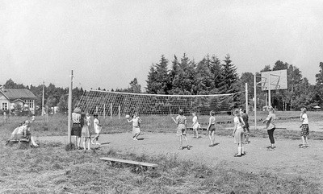

Сменить язык
Сменить язык
Game Description
Pioneerball, as a sport, was originally popular in Soviet pioneer camps and schools. It is a team game similar to volleyball but with some differences in the rules.
It emerged in the 1930s in the USSR; the author of this game and its specific birthplace are unknown to us. Pioneerball was a kind of "backyard" version of volleyball. They played with the same volleyball ball, sometimes even without a net. The game was especially loved by children aged 10 to 16 and was widespread in pioneer camps. It was also played on sports grounds and even in schools during physical education classes.
Games like pioneerball encouraged children to engage in sports and an active lifestyle. They helped children feel part of society, part of a team, and helped them make friends. Joint active pastime united the kids and occupied their leisure time, distracting them from pranks and mischief.
Game Rules

The game is played with a volleyball on a volleyball court. Each team usually consists of 6 players. The court is conventionally divided into 6 zones per player.
The back-line player, located within the court in the far right corner, throws the ball over the net onto the opponent's half of the court. One of the players from the opposing team must catch the ball and, making no more than three steps or one pass of the ball and two steps on their half of the court, throw it back over the net to the first team's half of the court. One of the players from the first team must also catch the ball and, making no more than three steps or one pass of the ball and two steps, throw it onto the opponent's half of the court. And so on until the ball falls to the ground—then one point is awarded to the team that threw the ball.
The ball is considered lost to the receiving team, and the serving team loses the serve if:
- The ball touches the court;
- A player takes more than three steps with the ball in an attack;
- A player touches the net;
- A player touches the ball twice in a row;
- A player crosses the centerline;
- The ball flies over the net but lands beyond the court boundaries;
- The ball flies under the net or touches objects outside the court boundaries.
Exception: if the team's ball hits the net, the players are allowed to touch the ball 3 times.
- A player steps over the serving line.
- During the serve, the ball does not pass over the net.
If the ball touches the net but lands on the receiving team's side, by prior agreement between the teams, the following options may apply: repeat of the serve, change of serve, or awarding a winning point to the receiving team.
As in volleyball, players move around the court to the next zone clockwise after winning the serve. After reaching a certain number of points (usually 10, 15, or 25 with a minimum lead over the opponent of 2 points), the teams switch sides of the court, and the second set is played. If the result after two sets is tied (1:1), then a third set is played. The right to serve first in the match is determined by drawing lots, after each set, there is a change of sides, and the opposing team serves first. In the middle of the deciding (third) set, there is a change of sides, and the same player serves after the change. When serving, the player moves to the backline (the out-of-bounds line) and throws the ball over the net.
The advantage of this game is its simplicity, dynamism, and at the same time "flexibility". If there were 10 people willing to play, teams played 5-on-5, and if there were more, then 8-on-8. As a rule, there was enough space on the court for everyone willing to play, and that was the most important thing! And the composition of the players could be of different ages. The rules could also be modified: you could play games to 10, 15, or 20 points – whatever was convenient at that particular moment, and also pre-arrange the number of possible passes and steps on your half of the court.
Varieties
- For Blind Children a team consists of blind or visually impaired players and one sighted player, an audible ball is used, and bells are attached to the net.
- With Two Balls the task is not to allow both balls to be on one half of the court simultaneously.
Our Time
Pioneerball is still alive. Nowadays, it is included in the physical education program of secondary schools. It is believed that this game teaches teamwork, develops orientation skills, and provides direction for further athletic development. However, it's not easy to meet those who gave the name to pioneerball. The All-Union Leninist Young Communist League was disbanded in the 1990s and is now maintained only by enthusiasts. Well, the game has outgrown its era. Today, children don't really care why it's called pioneerball. Among themselves, they've nicknamed it "lazy volleyball".Other Varieties of Volleyball
- Classic a team sport, a team game, in which two teams compete on a special court divided by a net, trying to direct the ball to the opponent's side in such a way that it lands on the opponent's court (reach the floor), or so that a player of the defending team commits an error. At the same time, to organize an attack, players of one team are allowed no more than three consecutive touches of the ball (in addition to the touch on the block).
- In the Snow a variety of volleyball in which teams compete on a snow-covered court.
- Beach a popular sport, a game on a sandy court divided by a high net, in which two teams on opposite sides of the net throw the ball over it, usually with their hands, aiming to land it on the opponent's half and prevent the ball from falling on their own half of the court.
- Sitting a variety of volleyball for athletes with musculoskeletal disabilities, a Paralympic sport.